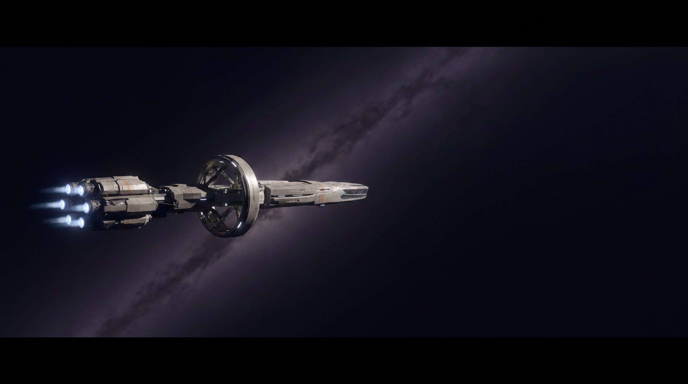
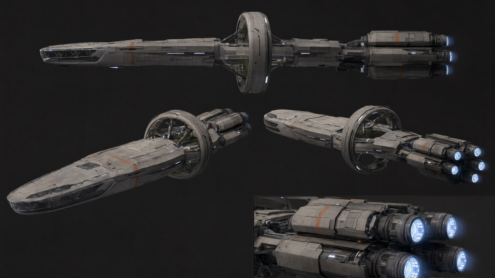
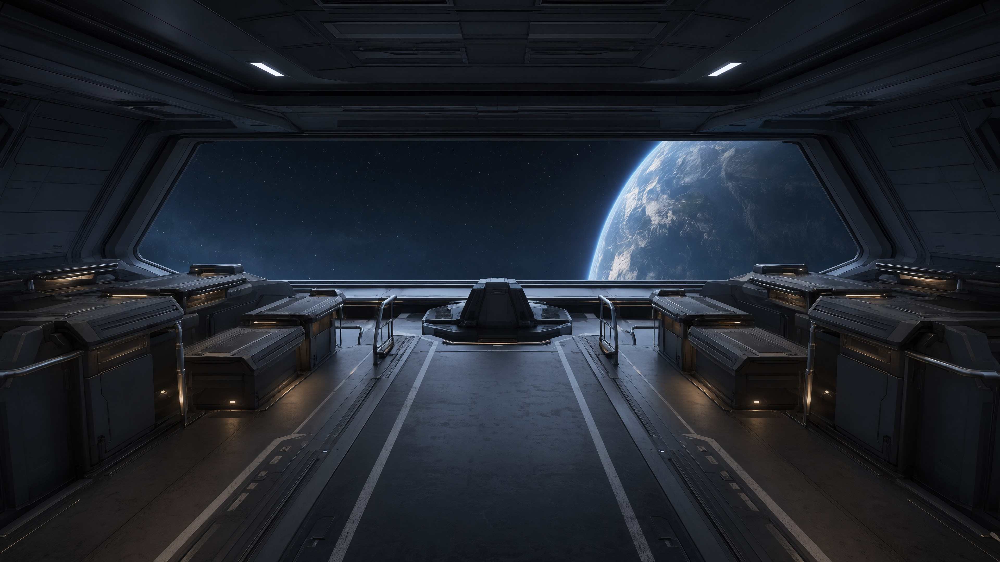
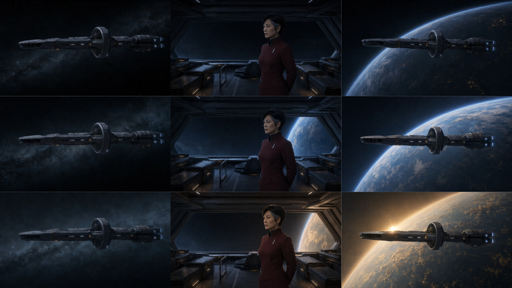
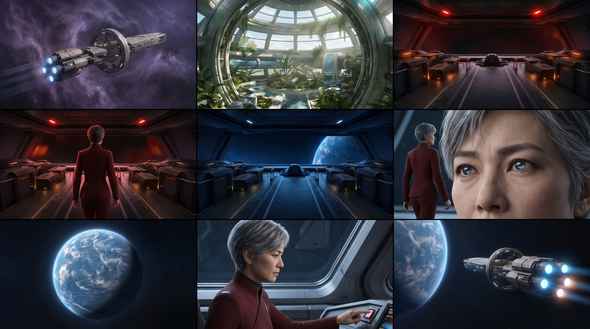
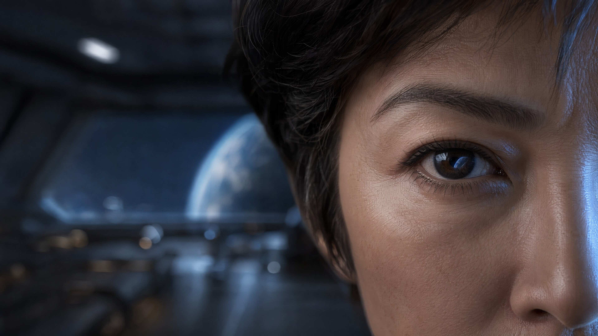
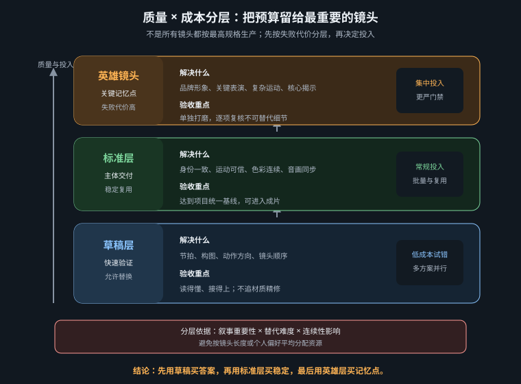
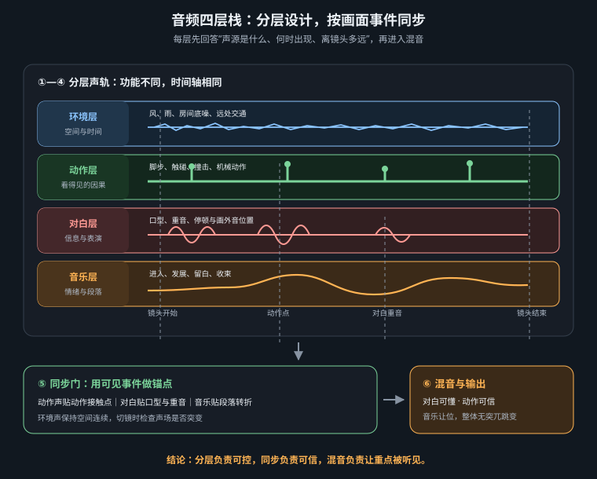

第 37 章 · 《归乡号》完整实战
从一页需求书到十镜成片：把审美定义、设定资产、首帧门禁、视频排产、三级 QC、后期混音与交付归档压进一条可复用产线
本章制作一支 60 秒游戏 CG 概念短片：漂泊两百年的世代星舰“归乡号”终于在深空中发现可居住的蓝色家园，舰长从沉默观察到下达“全速前进”的命令。项目故意只保留一名核心角色、三处空间和一个明确色彩转折，使生产难点集中在跨镜一致性、情绪递进与可交付性，而不是靠不断增加角色和场景制造虚假复杂度。以下每一步都有输入、输出、门禁和返工去向；昂贵的视频生成阶段只执行已经被便宜环节批准的决定。

Phase 0 · 需求书：先定义何时算完成
需求书控制的是边界，不是灵感。没有明确交付规格，团队会在生成时临时改画幅、在剪辑时补镜头、在混音时才发现需要无对白版本。以下一页纸在任何出图之前冻结；后续若变更，必须记录版本与对工期的影响。
| 条目 | 《归乡号》冻结规格 | 验收方式 |
|---|---|---|
| 传播目标 | 展示“漫长漂泊终于抵达”的世界观与舰长决断，作为游戏概念预告 | 无字幕试映后，观众能复述“发现家园并加速前往” |
| 主交付 | 1920×1080、48 fps、60.0 秒、16:9；立体声 48 kHz；H.264 审阅版与高码率母版 | 媒体信息检查分辨率、帧率、时长、音频采样率 |
| 衍生交付 | 无对白版、无音乐版、字幕文件、封面静帧、十镜分镜联系表、授权清单 | 逐项打开，不以“工程里有”代替导出文件 |
| 风格 | 物理可信的电影化游戏 CG；深空冷青与返乡金色形成克制对比 | 抽取任意三帧仍属于同一材质、镜头和调色系统 |
| 硬指标 | 舰长四个镜头为同一人；星舰轮廓固定；舰桥布局与光源方向连续；无脸崩、手崩、跳色、闪纹；全片有声 | 角色联系表、镜头并排、正常速度与慢速巡检 |
| 预算 | 16GB 级单卡思路；视频生成两个夜间窗口；毛坯废片预算 30%；人工约 14 小时 | 排产表记录每镜版本、运行时长与返工原因 |
| 变更边界 | 锁分镜后不新增场景；锁画后只允许修声音、字幕和技术错误 | 任何新增需求先写变更单，不在节点图里偷偷实现 |
Phase 1 · 风格圣经：把“电影感”翻译成固定变量
风格圣经必须同时写“要什么”和“不要什么”。《归乡号》的视觉基座不是一串形容词，而是一组可重复的光学与材质约束：
项目锚句（每个首帧提示词原样复用）： cinematic science-fiction game CG, physically plausible PBR materials, restrained teal-and-amber color design, low-key practical lighting, anamorphic 2.39:1 visual language composed safely inside a 16:9 delivery frame, subtle 35mm film grain, controlled bloom, realistic scale, no text, no logo 材质规则：舰体为深灰陶瓷装甲 + 少量磨损金属边；舰桥为消光黑金属、烟灰玻璃、低亮全息界面。 镜头规则：18–24mm 只用于星舰与空间建立；35–50mm 用于人物中景；85–100mm 用于眼睛和情绪特写。 光线规则：舰桥行星蓝光恒从画面右侧进入；控制台暖光自下而上，仅做辅光；顶灯保持低亮中性。 运动规则：发现家园前以横移、缓降和锁定镜头为主；发现后改为缓推、后拉与推进器加速。 禁用：高饱和霓虹拼盘、无来源轮廓光、纯黑死区、过强镜头光斑、塑料皮肤、随机文字、装饰性机械线堆砌。
风格圣经还要规定“允许的变化”。例如舷窗外颜色可以从紫黑星云过渡到蓝色行星，再进入微金晨光；但舰桥右侧蓝色主光的方向、舰长制服的绯红与银色徽记、星舰前观景舱与生态环的组合剪影不能变化。稳定变量负责识别，变化变量负责叙事。

Phase 2 · 设定资产：角色、星舰与舰桥先于镜头
镜头不是设定图的替代品。先在中性条件下建立标准资产，再把它们作为每个镜头的参考输入。资产必须能回答“从没见过的角度是什么样”，而不只是产出一张气氛海报。
1. 舰长设定
| 字段 | 冻结内容 |
|---|---|
| 身份锚句 | 42 岁东亚女性舰长，短黑发、鬓角一缕银灰，窄长眼，冷静克制；不得改变年龄、脸型、发型与银灰发束位置 |
| 制服 | 低饱和绯红结构化立领制服，黑色高领内层，左胸一枚细长银色舰徽，腰侧窄银色功能带，消光面料；无披风、无帽、无额外勋章 |
| 标准视图 | 正面胸像、左右四分之三、正侧面、全身正背面；中性表情、纯灰背景、5600K 大软光 |
| 表演边界 | 主要靠眼神、呼吸与轻微下颌动作；不做夸张喊叫，不露齿大笑 |
character reference sheet of Captain Lin Yue, a 42-year-old East Asian woman, short black hair with one silver-gray lock at the temple, narrow eyes, calm restrained expression, structured muted-crimson uniform over a black high collar, one slender silver ship insignia on the left chest and a narrow silver utility belt, matte fabric, front bust, left and right three-quarter views, strict profile, full-body front and back, neutral 5600K soft studio lighting, plain middle-gray background, consistent facial geometry and costume, no cinematic lighting, no scar, no hat, no cape, no extra medals
2. 星舰设定
“归乡号”是一艘长度约两公里的世代星舰：水平延伸的船体前部是扁平透明观景舱，中段有一座开放式生态环，尾部为三组蓝白聚变推进器，暖灰陶瓷装甲上只有少量救援橙识别条。提示词里的“colossal”负责尺度感，但真正锁身份的是透明前观景舱、开放生态环、三组推进器、橙色识别条四个可数特征。设定输出左侧正交、船首四分之三、船尾四分之三与推进器材质局部；所有图使用中性深灰背景，不加星云遮挡轮廓。
orthographic starship design sheet, the generation ship Homebound, approximately two kilometers long, a long horizontal hull with a flat transparent forward observation deck, one open habitat ring at the midsection, three blue-white fusion thrusters at the rear, low-reflection warm-gray ceramic armor with restrained rescue-orange recognition stripes, left orthographic, front three-quarter, rear three-quarter and thruster-detail views, neutral lighting, clean charcoal background, exact repeated silhouette, no text, no weapons, no battle damage
3. 舰桥设定
舰桥空间以中央低矮指挥椅为原点：正前方是一整块梯形舷窗；左右各三组哑光深灰控制台；地面引导线从后方汇向座椅；右侧行星光进入后，先打到舰长左脸还是右脸必须根据摄影机朝向在分镜表中注明，不能只机械复制“右侧光”。空场景设定至少输出正面透视、后视与俯视平面，记录舷窗、座椅、六组控制台和门的位置。



三张基础设定使用 XD Mivo 的 GPT Image 2 以 16:9 高质量模式分别生成，正文中的角色、星舰与舰桥提示词就是其任务简报；这一轮不使用互相参考，目的是先让每类资产在中性条件下独立成立。批准后，把三张原图通过 Mivo 的图片引用槽位交给 Nano Banana Pro，生成十镜分镜板和 S01 首帧；色彩脚本与 S07 特写则把相同参考交给 GPT Image 2 编辑模式。这样，后续图片继承的是已批准资产，而不是重新从文字抽取一个“相似角色”。
交付处理：生成原件保存在 Cindy 本地媒体库；电子书使用质量 90 的 JPEG 副本，基础设定为 3840×2160，分镜和 S01 为 2752×1536。所有页面图均可点击查看适屏版，再次点击进入原始尺寸。
把角色、星舰和舰桥图分别遮住文件名，随机排列后检查：同类资产是否仍能一眼认作同一个对象；不同视角的可数特征是否对得上；参考图是否混入戏剧光、景深、文字或多余配件。任一项失败就不进入分镜。参考图越“有氛围”，越可能把错误光影带进所有镜头。
Phase 3 · 色彩脚本：十镜只有一个真正的转折
全片分三段。0:00–0:21 是“漂泊”：紫黑深空、低饱和青灰、亮度压低；0:21–0:38 是“发现”：舰桥白光逐渐被蓝色行星光接管，S05 为唯一显著换光；0:38–1:00 是“归航”：蓝色仍占主体，暖金只在面部辅光、行星晨昏线与推进器中出现。这样，金色代表希望而不是全片通用滤镜。
| 段落 | 镜头 | 主色与亮度 | 叙事任务 | 禁止 |
|---|---|---|---|---|
| 漂泊 | S01–S04 | #101521 深空黑、#273746 青灰、少量 #6B527E 星云紫 | 规模、秩序、漫长等待 | 过早出现暖金希望色 |
| 发现 | S05–S07 | #163C63 行星蓝进入中高光，绯红制服保持低饱和 | 信息被看见，情绪由外部进入人物 | 全屏蓝霓虹、亮度突然爆白 |
| 归航 | S08–S10 | #2D7FA3 大气蓝、#D29A54 晨光金与推进器暖白 | 确认家园、做出决定、获得方向 | 把金色铺满暗部导致廉价宣传片感 |

Phase 4 · 十镜分镜：每镜只承担一个核心动作
以下时间码总长严格为 60 秒。每镜留有内部把手，剪辑时不依赖生成模型准确卡到最后一帧。景别、机位、运镜、声音与风险同时写入，避免“画面生成完再想怎么剪”。
| 镜号 / 时间 | 画面与动作 | 镜头语法 | 声音设计 | 首要风险 |
|---|---|---|---|---|
| S01 00:00–00:06 | 归乡号从紫黑星云左侧缓慢横越，巨舰只占画面约三分之一 | 18mm 大远景；负空间；极慢横移 | 低频引擎、遥远金属共振，无音乐旋律 | 前观景舱、生态环与三组推进器被随机改写 |
| S02 00:06–00:11 | 生态舱人造天空下，孩子触摸一株微微摇动的植物 | 24mm 广角；从穹顶缓降到人物 | 空气循环、叶片、远处广播前导音 | 新增多人抢主体，手指畸形 |
| S03 00:11–00:16 | 走廊广播灯亮起，船员停步抬头 | 35mm 对称走廊；锁定机位 | 脚步停止、广播灯提示音、环境继续 | 全员同时夸张转头，灯带闪烁 |
| S04 00:16–00:21 | 舰长在指挥椅中睁眼并缓慢起身 | 50mm 中景；轻微仰拍；小幅上摇 | 呼吸、制服摩擦、一次靴底落地 | 角色身份、银灰鬓发与左胸舰徽漂移 |
| S05 00:21–00:26 | 同一构图中，舰桥中性光被深蓝星图与舷窗蓝光接管 | 35mm 固定镜头；首尾帧状态切换 | 低频持续；星图启动由细到厚；不加警笛 | 布局变形、换光变成物体溶解 |
| S06 00:26–00:32 | 舰长走向舷窗，侧脸逐渐被蓝光照亮 | 50mm 背侧中景；缓慢跟移与推近 | 两到三步、衣料、呼吸，音乐低弦进入 | 行走腿部与侧脸崩坏 |
| S07 00:32–00:36 | 眼睛大特写，瞳孔收缩，蓝色行星反光稳定存在 | 100mm 微距；几乎不可察觉的推近 | 环境低频抽薄，只留呼吸与微弱心跳 | 虹膜纹理闪烁、眼睛改色、身份丢失 |
| S08 00:36–00:42 | 由相似圆形硬切到完整蓝色行星，镜头后拉露出晨昏线 | 24mm 太空远景；匹配剪辑；缓慢后拉 | 音乐主题第一次完整出现，低频空间声回归 | 行星像贴图，云层时间闪烁 |
| S09 00:42–00:47 | 舰长按下通讯键，克制说“全速前进” | 85mm 近景；静机；伦勃朗式辅光 | 按键一次、正式后配对白、音乐自动闪避 | 口型、手指、按钮触点不同步 |
| S10 00:47–01:00 | 三组推进器依次增强，归乡号朝蓝色行星驶去，最后留黑 | 18mm 尾部大远景；先跟随再后拉；末尾减速 | 推进器层层加入、主题抬升后收束、黑场留尾响 | 推进器数量变化、加速像镜头抖动 |

Phase 5 · 首帧生产：先用静帧消灭最贵的错误
首帧提示词采用固定顺序：项目锚句 → 已批准资产 → 景别与构图 → 主体动作前状态 → 环境 → 光线 → 镜头 → 交付约束。人物镜头载入舰长标准图，星舰镜头载入四视图，舰桥镜头同时载入空场景参考。参考强度只高到足以稳定身份与结构，不应把标准照的中性光复制到戏剧镜头。
S04 首帧： cinematic science-fiction game CG, physically plausible PBR materials, restrained teal-and-amber color design, low-key practical lighting, Captain Lin Yue, same facial geometry as the approved reference, 42-year-old East Asian woman, short black hair with one silver-gray lock at the temple, structured muted-crimson uniform over a black high collar, one slender silver insignia on the left chest, medium shot, slight low angle, seated at the command chair just before rising, semi-circular consoles create leading lines toward her, exact approved bridge layout, soft neutral overhead strip, warm console fill from below, faint blue light entering from frame right, 50mm lens, controlled depth of field, safe 16:9 composition, no text, no logo, no extra medals, no hat, no plastic skin
S05 首尾帧对： 首帧只写状态 A：same approved bridge composition, neutral low-level overhead light, central star-map projector dormant, displays dim, no character movement 尾帧只写状态 B：exact same camera and bridge geometry, deep planetary blue light from frame right, a restrained holographic star map active above the central console, all physical objects remain in the same positions, no new screens, no text
S10 首帧： rear three-quarter extreme wide shot of the approved Homebound generation ship, exact flat transparent forward observation deck, one open midsection habitat ring, three rear fusion thrusters and restrained rescue-orange recognition stripes, blue planet small on the forward axis, vast negative space, thruster cores at low idle before acceleration, 18mm lens, stable silhouette, no extra engines, no weapons, no random markings, no camera shake
每镜先出四张，只改变种子；若四张都错，说明提示词或参考资产有问题，禁止继续抽卡。候选按五项各 0～5 分评分：叙事正确 30%、设定一致 25%、构图可剪 20%、光色符合脚本 15%、局部完整 10%。总分低于 4.0/5 或任一硬指标为 0，直接返工。入选首帧命名为 HB_S04_FF_v03_APPROVED.png，同时保存提示词、种子、模型与参考图清单。
把十张入选首帧排成一行：舰长是否同一人；星舰四个可数特征是否稳定；舰桥座椅与舷窗是否连续；S01–S10 的亮度和色温是否沿色彩脚本推进；主体运动方向能否在相邻镜头中接上；字幕安全区是否被高亮细节占据。此处修一张图以分钟计，视频生成后再修以小时计。

Phase 6 · 视频排产：先跑风险测试，再开夜间队列
视频提示词只写从首帧出发会发生什么：主体动作、镜头运动、环境次级运动、光线变化与声音事件。不要重复描述静态服装和场景，更不要在同一镜头加入三个主动作。先用 S05、S06、S07 三个高风险镜头各跑 2～3 秒技术测试，确认首尾帧、参考身份、音频解码与显存配置，再批量入队。
| 镜号 | 模式与计划素材 | 动作提示核心 | 排产档 |
|---|---|---|---|
| S01 | 首帧视频；生成 8 秒取 6 秒 | ship drifts left to right, tiny stable city lights, slow lateral tracking, nebula moves only subtly | 标准，2 版 |
| S02 | 首帧视频；6 秒取 5 秒 | gentle crane down, one child slowly touches one leaf, leaf responds once | 标准，手部失败则改更宽 |
| S03 | 首帧视频；6 秒取 5 秒 | locked camera, crew stop naturally at different moments, one announcement light pulses once | 轻量，2 版 |
| S04 | 角色参考；6 秒取 5 秒 | captain opens her eyes, rises once, gentle tilt up, identity, silver temple lock and uniform insignia remain unchanged | 精修，3 版 |
| S05 | 首尾帧；6 秒取 5 秒 | only lighting transitions from neutral to planetary blue, star map materializes without moving objects | 高风险测试后 2 版 |
| S06 | 角色参考；7 秒取 6 秒 | captain takes three slow steps toward viewport, subtle follow and push, blue light grows across profile | 精修，3 版 |
| S07 | 角色参考；5 秒取 4 秒 | pupil contracts once, planet reflection remains fixed, almost imperceptible push in | 顶级，短段先测 |
| S08 | 首帧视频；7 秒取 6 秒 | camera slowly pulls back, thin atmosphere and restrained clouds move continuously | 标准，2 版 |
| S09 | 角色参考 + 后配对白；6 秒取 5 秒 | captain presses one key then speaks one short line, camera locked, restrained expression | 精修，优先手与口型 |
| S10 | 首帧视频；生成两段并在稳定区拼接 | three fusion thrusters brighten in sequence, ship accelerates forward, camera gradually pulls back, motion settles | 标准，3 版 |
夜间队列按“最可能早上需要补”的顺序排列：S07、S09、S06、S05 先跑，远景后跑。文件名采用 HB_S07_MOTION_v02_seed1842.mp4；每次重抽必须在日志中选择原因码：ID 身份、GEO 几何、MOT 运动、COL 色彩、AUD 音频、TECH 技术。没有原因码的重抽只是赌博，不能改善下一轮。

Phase 7 · QC：三道门禁与明确返工去向
QC-1 毛坯内容门禁
先静音看内容，再闭眼听原生轨。正常速度看叙事和运动，25% 速度查结构突变，逐帧只查关键触点。评分顺序为：主体与动作正确、身份/几何连续、可剪时长、时域稳定、光色、声音。只要前两项失败，后面的锐度和音质没有讨论价值。
毛坯故障树： ├─ 主体、构图或核心动作错 │ ├─ 首帧已错 → 回 Phase 5 │ └─ 首帧正确、运动跑偏 → 缩短动作提示 / 一镜一动作 / 重跑视频 ├─ 舰长换脸或制服漂移 │ ├─ 参考图不合格 → 回 Phase 2 │ ├─ 参考未生效 → 修节点连接与强度 │ └─ 只在侧脸/行走崩 → 加参考、改机位或拆镜，不交给超分 ├─ 星舰或舰桥几何变化 → 强化可数特征 / 首尾帧 / 降低镜头运动 ├─ 色调离群但内容正确 → 标记 COL，留给统一调色；若光源方向错则重跑 ├─ 纹理闪烁、压缩软 → 内容锁定后进入超分测试 └─ 原生音频不稳 → 保留可用触点，后期重做连续层
QC-2 锁画门禁
十镜进入剪辑后先完成粗剪与节奏，不先做重型超分。锁画检查总时长、运动方向、视线、色彩弧、音乐卡点与字幕空间。S07 到 S08 必须以瞳孔圆和行星圆完成硬切；S04 到 S05 保持舰桥轴线；S09 对白之后至少留出观众理解命令的反应时间。锁画后禁止因“又生成一条更炫的”替换镜头，除非它修复已登记的硬错误。
QC-3 技术与交付门禁
最终以校准显示器审色，再用普通笔记本、手机和耳机检查真实观看条件。抽查全片首帧、每个切点前后两帧和末帧；核对黑位、非法高光、闪纹、重复帧、帧率、声画同步、True Peak、字幕拼写与安全区。技术 QC 与审美评审分开记录，避免“我觉得挺好看”掩盖无声、错帧或时长错误。
Phase 8 · 后期：差异化增强、统一调色与四层混音
后期不是每镜同样处理。S07 眼睛与 S09 对白近景使用修复式时序超分，先做 2 秒 A/B，严禁改变虹膜反光、银灰鬓发和嘴形；S04、S05、S06、S08 用标准时序超分；S01、S02、S03、S10 以稳定轮廓为主，可只做轻量重采样。之后统一插帧至 48 fps，并核对总时长仍为 60 秒。颗粒最后统一添加，不能让每镜的生成噪点冒充胶片一致性。
| 后期组 | 镜头 | 工艺 | 验收 |
|---|---|---|---|
| 精修 | S07、S09 | 保守修复式超分 → 局部修补 → 插帧 → 统一颗粒 | 身份与口型不变，皮肤/虹膜不闪 |
| 标准 | S04、S05、S06、S08 | 时序超分 → 插帧 → 镜头级色彩匹配 | 制服纹、星图、云层连续 |
| 轻量 | S01、S02、S03、S10 | 去块噪或重采样 → 插帧 → 轻锐化 | 星点、灯带、推进器数量稳定 |
调色分三层：镜头内先修曝光与白平衡；相邻镜头做匹配；全片最后加统一风格层。S05 是蓝色转折，不应被自动匹配抹平；S08 的金色只停留在晨昏线和高光。声音则建立 AMB、SFX、DIA、MUS 四组：连续引擎底层约在听感后景；保留 H3/LTX 原生脚步、按键等同步触点并清噪；“全速前进”使用固定舰长音色后配，贴合 S09 口型；音乐在 S06 进入低弦，S08 展开主题，S09 对白自动闪避，S10 推进器增强后收束。网络审阅版以约 -16 至 -14 LUFS-I、True Peak 不高于 -1 dBTP 为起点，最终服从发布平台规格。


Phase 9 · 交付与归档：让下一集从资产开始，而不是从零开始
交付前从空目录模拟客户接收，不依赖本机字体、插件和绝对路径。审阅版用于传播确认，高码率母版用于后续转码；字幕、无对白版、无音乐版和封面静帧分别打开验证。文件名带项目、画幅、语言、版本和日期，例如 HB_Master_1080p48_zh-CN_v08_20260814.mov，禁止出现 final_final2。
HB_归乡号/ ├─ 00_BRIEF/ 需求书、变更记录、交付规范 ├─ 01_BIBLE/ 风格圣经、色彩脚本、光源逻辑 ├─ 02_ASSETS/ Captain_LinYue、Homebound_Ship、Bridge_Set ├─ 03_STORYBOARD/ 十镜表、时间码、首帧候选与 APPROVED ├─ 04_MOTION/ 按 S01–S10 分目录，保留版本与失败原因 ├─ 05_AUDIO/ AMB、SFX、DIA、MUS、授权与原始录音 ├─ 06_POST/ 超分、插帧、调色、字幕、可交换工程 ├─ 07_MASTER/ 审阅版、母版、分轨、字幕、校验值 └─ manifest.csv 文件、模型/节点版本、来源、授权、负责人、状态
生成资产旁保存可重建信息：模型与权重来源、权重哈希、节点版本、工作流 JSON、提示词、负面约束、种子、参考图版本、输出参数与日期。角色、星舰和舰桥设定标记为系列级固定资产；镜头毛坯属于项目资产；失败样本不必全部永久保存，但每类失败至少留一个代表和原因码，供下一集避坑。
□ 60.0 秒、1920×1080、48 fps、48 kHz 与需求书一致；□ 十镜叙事无需解释即可读懂；□ 舰长脸型、疤痕、制服和音色连续；□ 归乡号四个可数特征连续；□ 舰桥布局与行星光方向正确；□ 色彩从漂泊、发现到归航形成一条弧；□ 无面部/几何突变、闪纹、重复帧和过锐白边；□ S09 口型、按钮和对白同步；□ LUFS 与 True Peak 符合目标平台；□ 所有交付文件独立可开；□ 声音、音乐、模型与参考资产授权可追溯；□ 工作流、参数、哈希和 APPROVED 资产已归档。
复盘：这条产线真正节省了什么
完整项目的效率不来自把每个节点再加速 10%，而来自减少错误进入昂贵阶段。需求书阻止范围漂移；风格圣经减少随机审美；设定资产减少身份返工；色彩脚本让调色有目标；十镜表把动作、声音和风险提前对齐；首帧门禁把视频抽卡变成执行；原因码让返工产生知识；差异化后期把算力放在观众真正会看的脸、眼睛与对白；规范归档则让下一支片复用角色、舰船、舰桥和工程。最终得到的不只是一条《归乡号》，而是一套可以继续拍第二集的生产系统。